Class Connector
- Namespace
- OpenMEPRevit.ConnectorManager
- Assembly
- OpenMEPRevit.dll
A connector in an Autodesk Revit MEP project document.
public class Connector- Inheritance
-
Connector
- Inherited Members
Remarks
This connector is an item that is a part of another element (duct, pipe, fitting, or equipment etc.). This connector does not represent the connector element that can be created inside a family; for that element, refer to Autodesk.Revit.DB.ConnectorElement.
Methods
AllRefs(Connector)
All references of the connector.
public static List<Connector> AllRefs(Connector connector)Parameters
connectorConnectorconnector
Returns
- List<Connector>
A set of connectors that the connectors is connected to, including both physical connection and logical connection.
Examples
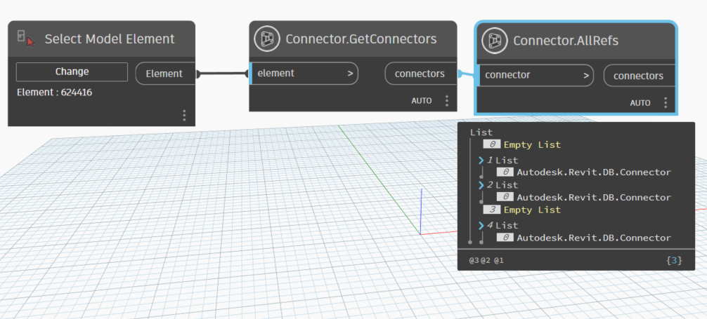
Angle(Connector)
return angle of connector
public static double Angle(Connector connector)Parameters
connectorConnectorconnector
Returns
- double
radian
Examples
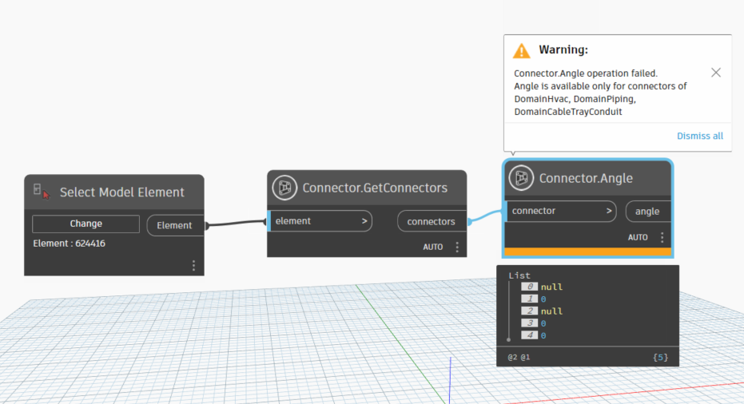
Connector.Angle.dynAssignedFixtureUnits(Connector)
The assigned fixture units of the connector.
public static double AssignedFixtureUnits(Connector connector)Parameters
connectorConnectorConnector
Returns
- double
AssignedFixtureUnits
Examples
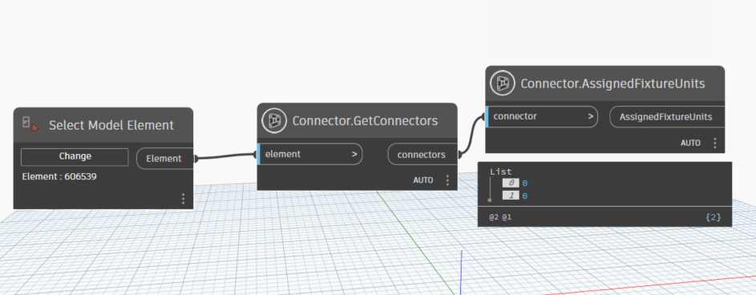
AssignedFlow(Connector)
The assigned flow of the connector.
public static double AssignedFlow(Connector connector)Parameters
connectorConnectorConnector
Returns
- double
AssignedFlow
Examples
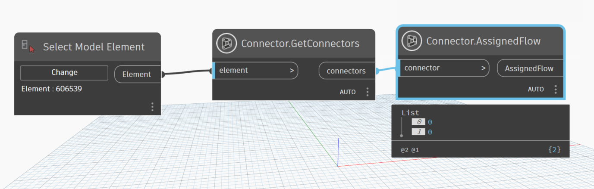
Connector.AssignedFlow.dynAssignedFlowFactor(Connector)
The assigned flow factor of connector.
public static double AssignedFlowFactor(Connector connector)Parameters
connectorConnectorConnector
Returns
- double
AssignedFlowFactor
Examples
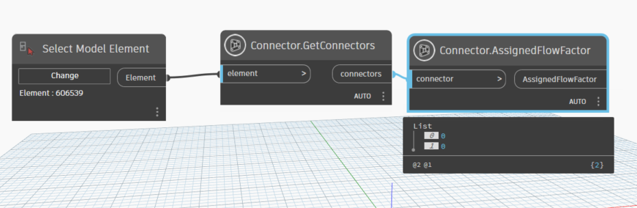
AssignedKCoefficient(Connector)
The assigned kCoefficient of the connector.
public static double AssignedKCoefficient(Connector connector)Parameters
connectorConnectorConnector
Returns
- double
AssignedKCoefficient
Examples
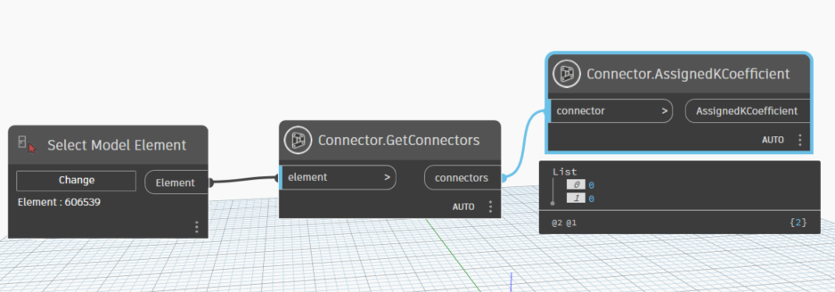
AssignedLossCoefficient(Connector)
The assigned loss coefficient of the connector.
public static double AssignedLossCoefficient(Connector connector)Parameters
connectorConnectorConnector
Returns
- double
AssignedLossCoefficient
Examples

AssignedPressureDrop(Connector)
The assigned pressure drop of the connector.
public static double AssignedPressureDrop(Connector connector)Parameters
connectorConnectorConnector
Returns
- double
AssignedPressureDrop
Examples
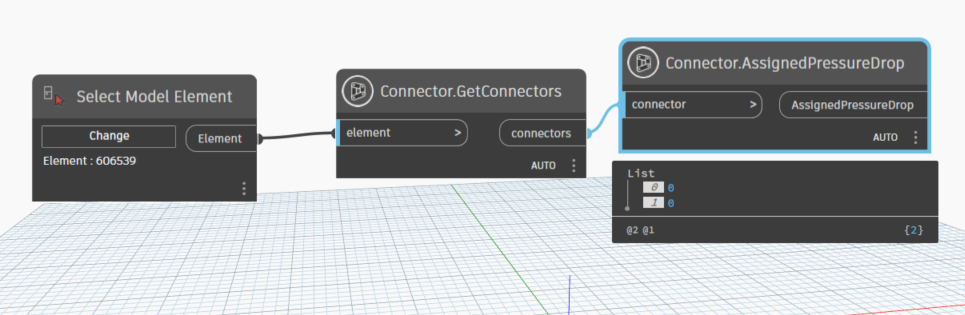
Coefficient(Connector)
The coefficient of the connector.
public static double Coefficient(Connector connector)Parameters
connectorConnectorConnector
Returns
- double
Coefficient
Examples
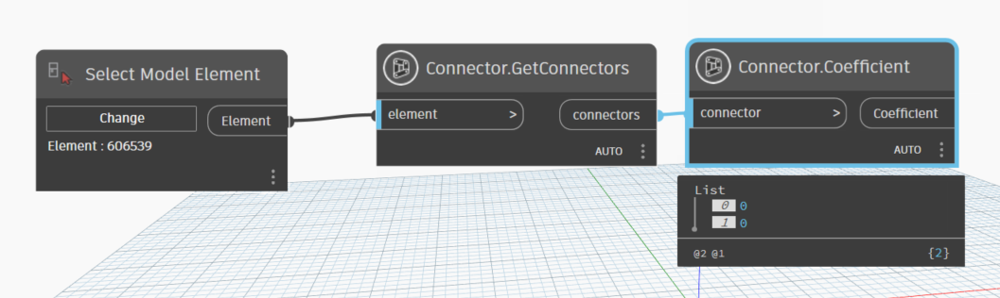
Connector.Coefficient.dynConnectTo(Connector, Connector)
Remove connection between two connectors.
public static Connector ConnectTo(Connector connector, Connector connectorFrom)Parameters
connectorConnectorconnect need connect
connectorFromConnectorIndicate the connector, connection will be removed from.
Returns
- Connector
connect need connect
Examples
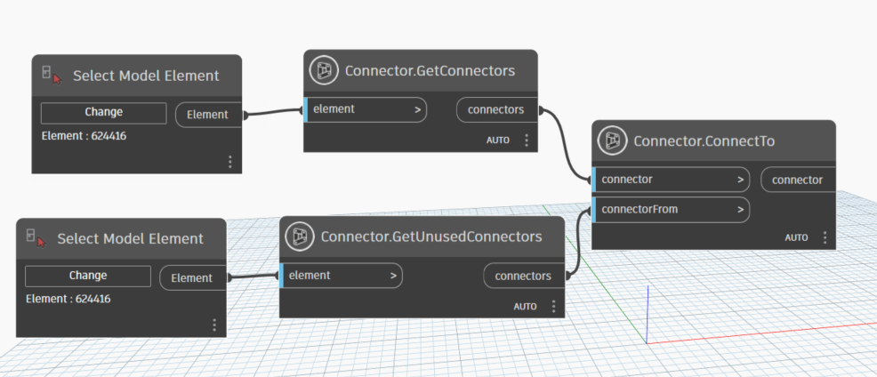
ConnectorManager(Connector)
The connector manager of the connector.
public static ConnectorManager ConnectorManager(Connector connector)Parameters
connectorConnectorConnector
Returns
- ConnectorManager
ConnectorManager
Examples
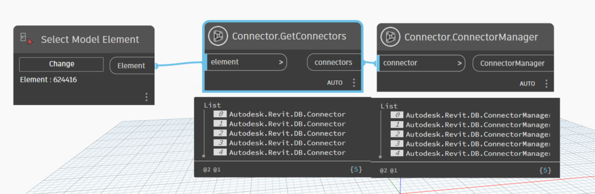
CoordinateSystem(Connector)
Return CoordinateSystem of the connector.
[MultiReturn(new string[] { "Origin", "BasisX", "BasisY", "BasisZ", "Determinant", "Scale", "HasReflection", "IsConformal", "IsTranslation", "IsIdentity" })]
public static Dictionary<string, object?> CoordinateSystem(Connector connector)Parameters
connectorConnector
Returns
Examples
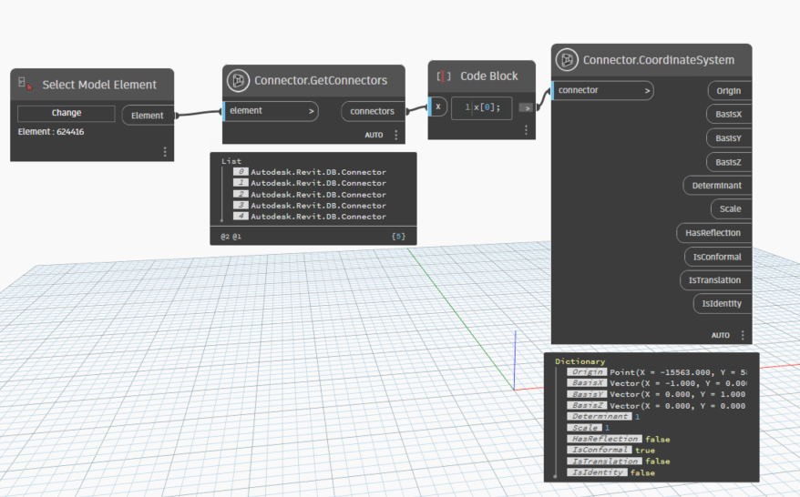
Demand(Connector)
The demand of the connector.
public static double Demand(Connector connector)Parameters
connectorConnectorConnector
Returns
- double
Demand
Examples
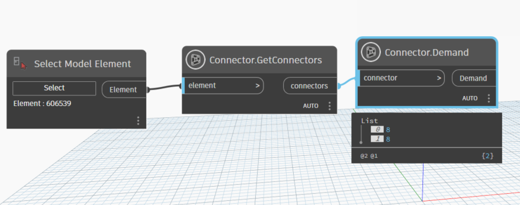
Connector.Demand.dynDescription(Connector)
The description of the connector.
public static string Description(Connector connector)Parameters
connectorConnectorConnector
Returns
- string
Description
Examples
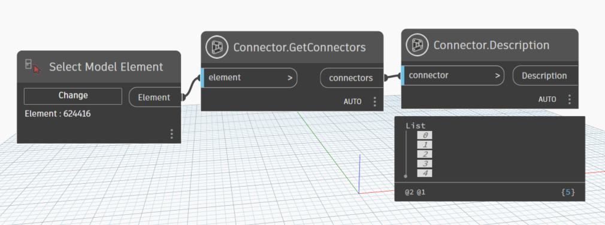
Direction(Connector?)
Get direction of connector
public static Point? Direction(Connector? connector)Parameters
connectorConnector
Returns
- Point
Examples
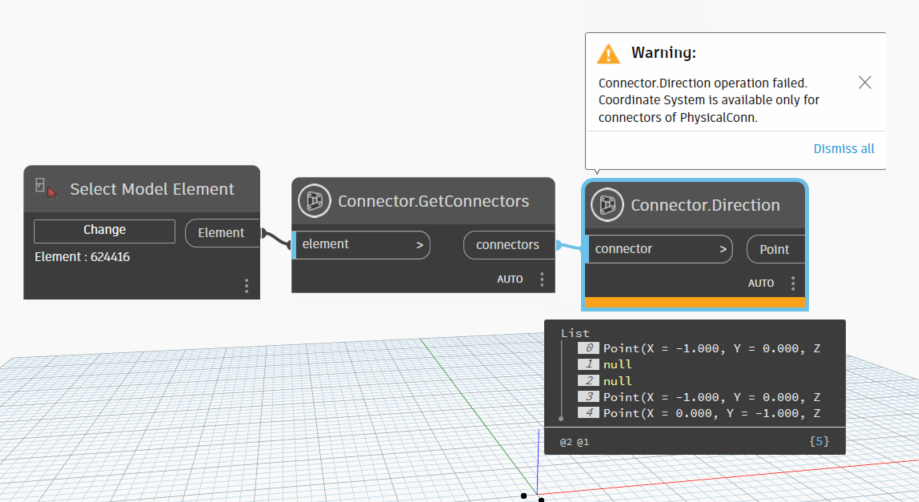
Connector.Direction.dynDisConnectFrom(Connector, Connector)
Remove connection between two connectors.
public static Connector DisConnectFrom(Connector connector, Connector connectorFrom)Parameters
connectorConnectorconnect need disconnect
connectorFromConnectorIndicate the connector, connection will be removed from.
Returns
- Connector
connector need disconnect
Examples
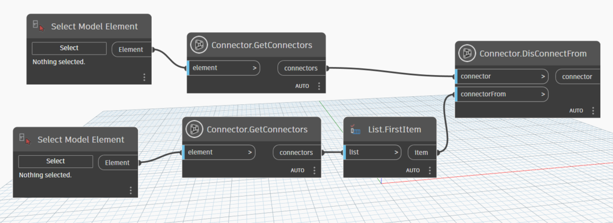
Display(Connector?, double)
Shows scalable lines representing the CoordinateSystem of a Connector.
[MultiReturn(new string[] { "Display", "Origin", "XAxis", "YAxis", "ZAxis", "XYPlane", "YZPlane", "ZXPlane" })]
public static Dictionary<string, object?> Display(Connector? connector, double length = 1000)Parameters
connectorConnectorAutodesk.Revit.DB.Connector
lengthdoubledouble
Returns
- Dictionary<string, object>
GeometryColor order by x,y,z
Examples
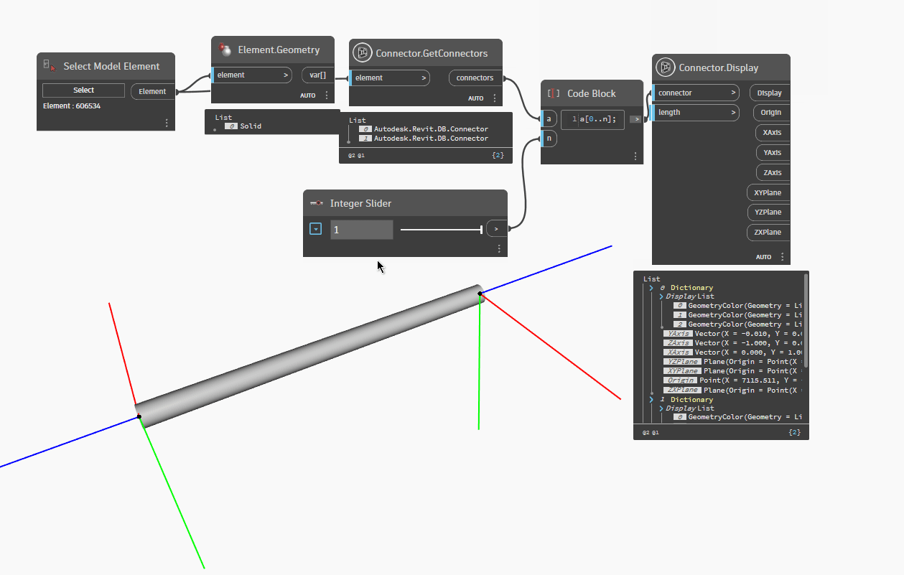
DistanceTo(Connector?, Point?)
return distance between one connector with another point
public static double? DistanceTo(Connector? connector, Point? point)Parameters
connectorConnectorthe connector
pointPointpoint to get distance from this to the connector
Returns
- double?
distance from connector to point
DistanceTo(Connector?, Connector?)
return distance between one connector with another connector
public static double? DistanceTo(Connector? connector1, Connector? connector2)Parameters
connector1Connectorconnector2Connector
Returns
Examples
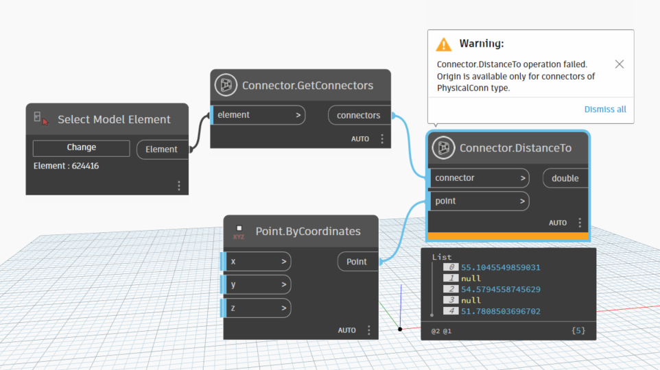
Connector.DistanceTo.dynDomain(Connector)
The domain of the connector.
public static dynamic Domain(Connector connector)Parameters
connectorConnectorConnector
Returns
- dynamic
Domain
Examples
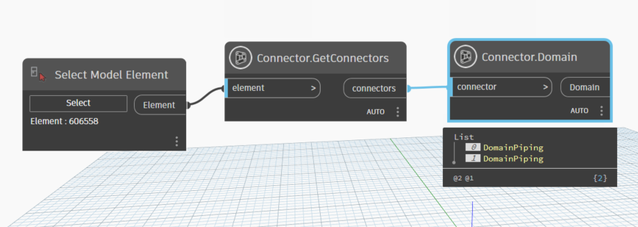
EngagementLength(Connector)
Connector engagement length
public static double EngagementLength(Connector connector)Parameters
connectorConnectorConnector
Returns
- double
Connector engagement length
Examples
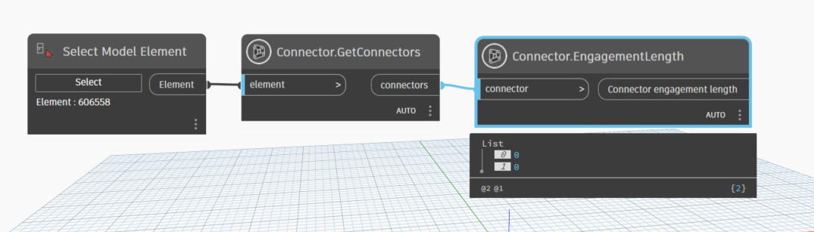
Connector.EngagementLength.dynFlow(Connector)
The Flow of the connector.
public static double Flow(Connector connector)Parameters
connectorConnectorConnector
Returns
- double
Flow of connector
Examples
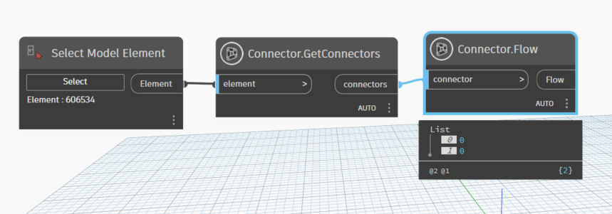
Connector.Flow.dynGetArea(Connector)
Get area of connector
public static double GetArea(Connector connector)Parameters
connectorConnectorconnector
Returns
- double
area of connector
Examples
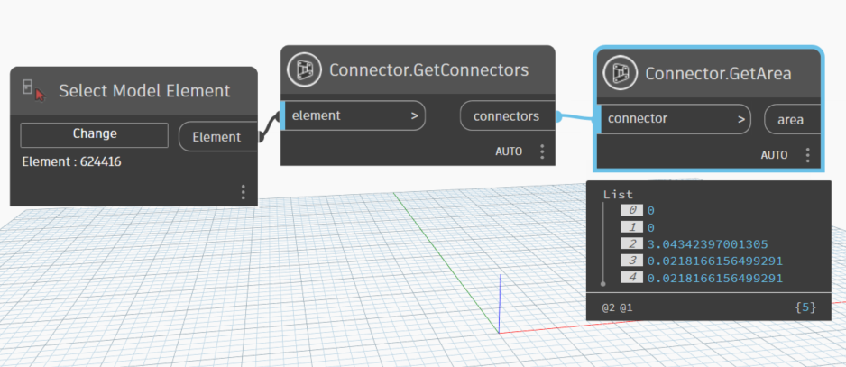
GetConnectorClosest(Point, List<Connector>)
Return Connector Closet With Connector Current
public static Connector? GetConnectorClosest(Point point, List<Connector> connectors)Parameters
pointPointorigin
connectorsList<Connector>list connector to check
Returns
- Connector
connector
Examples
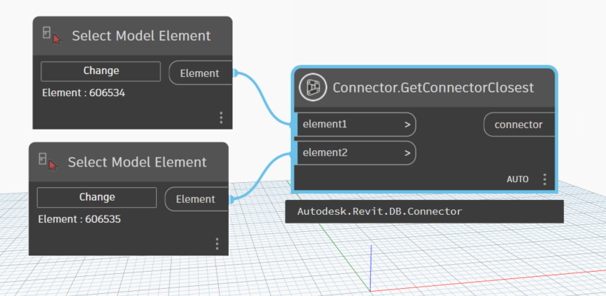
Connector.GetConnectorClosest.dynGetConnectorClosest(Connector?, List<Connector>)
Return Connector Closet With Connector Current
public static Connector? GetConnectorClosest(Connector? c, List<Connector> connectors)Parameters
cConnectorfirst connector
connectorsList<Connector>an collection connectors to check
Returns
- Connector
closet connector
Examples
Connector.GetConnectorClosest.dyn
GetConnectorClosest(Element, Point)
Get closest Connector inside the Element with a Point
public static Connector? GetConnectorClosest(Element element, Point point)Parameters
elementElementelement contains connectors
pointPointpoint need to check
Returns
- Connector
closest connector with point
GetConnectorClosest(Element?, Element?)
Return Closet Connector between element1 from element2
public static Connector? GetConnectorClosest(Element? element1, Element? element2)Parameters
element1Elementfirst element
element2Elementsecond element
Returns
- Connector
closet connector of element1
Examples
Connector.GetConnectorClosest.dyn
GetConnectorConnectedWith(Connector)
return element connected with connector
public static Connector? GetConnectorConnectedWith(Connector connector)Parameters
connectorConnectorconnector
Returns
- Connector
element has connected with connector
Examples
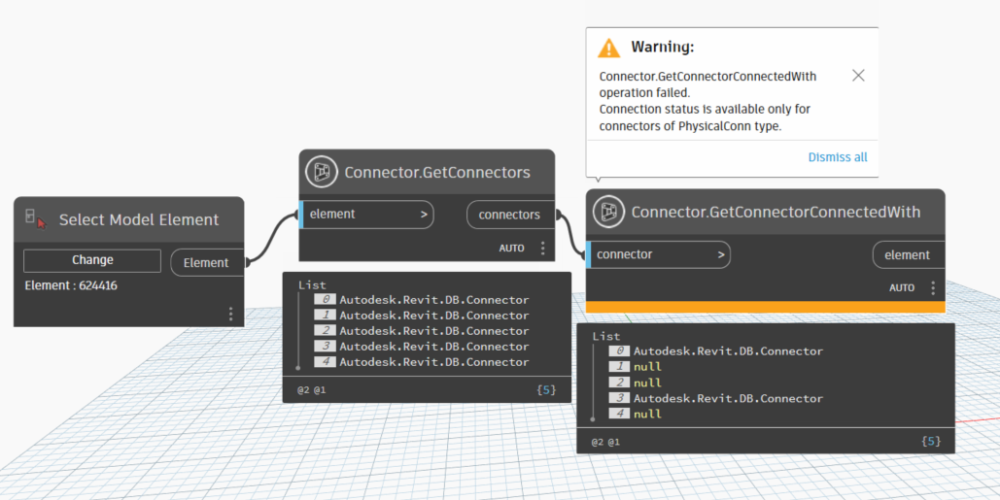
GetConnectorFarthest(Point?, List<Connector?>)
return connector farthest with point current
public static Connector? GetConnectorFarthest(Point? point, List<Connector?> connectors)Parameters
pointPointthe point to check
connectorsList<Connector>an collection of connectors
Returns
- Connector
the connector farthest with this point
GetConnectorFarthest(Connector?, List<Connector?>)
return connector farthest with connector current
public static Connector? GetConnectorFarthest(Connector? connector, List<Connector?> connectors)Parameters
connectorConnectorthe connector
connectorsList<Connector>an collection connector to check
Returns
- Connector
connector
GetConnectorFarthest(Element?, Element?)
Return Farthest Connector between element1 with element2
public static Connector? GetConnectorFarthest(Element? element1, Element? element2)Parameters
element1Elementfirst element
element2Elementsecond element
Returns
- Connector
Farthest connector of element1
Examples
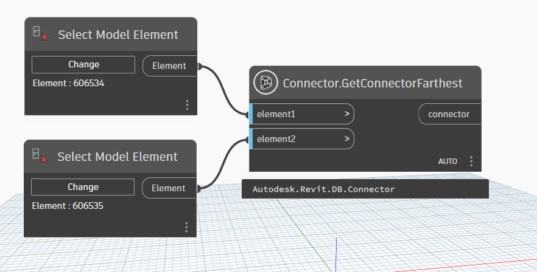
Connector.GetConnectorFarthest.dynGetConnectorSet(Element?)
return connector set of element
public static ConnectorSet? GetConnectorSet(Element? element)Parameters
elementElement
Returns
- ConnectorSet
Examples
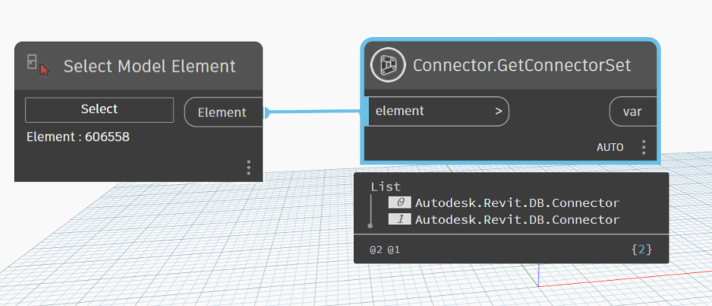
Connector.GetConnectorSet.dynGetConnectors(ConnectorManager)
return list connector from connector manager
public static List<Connector> GetConnectors(ConnectorManager connectorManager)Parameters
connectorManagerConnectorManagerconnector manager
Returns
- List<Connector>
connectors
GetConnectors(Element?)
return list connector from element
public static List<Connector> GetConnectors(Element? element)Parameters
elementElementelement
Returns
- List<Connector>
connectors
Examples
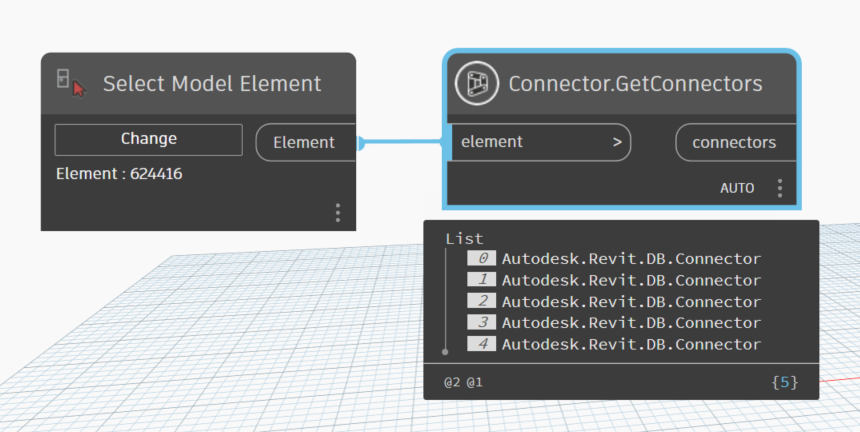
Connector.GetConnectors.dynGetDirection(Connector?)
Get direction BasisZ of connector
public static Point? GetDirection(Connector? connector)Parameters
connectorConnector
Returns
- Point
GetElementConnectedContinuous(Connector)
Return All Element Connected Continuous In Branch Be careful, because this node require recursive to check all connected.
public static List<Element> GetElementConnectedContinuous(Connector connector)Parameters
connectorConnectorelement
Returns
- List<Element>
list element connected Continuous from element
Examples
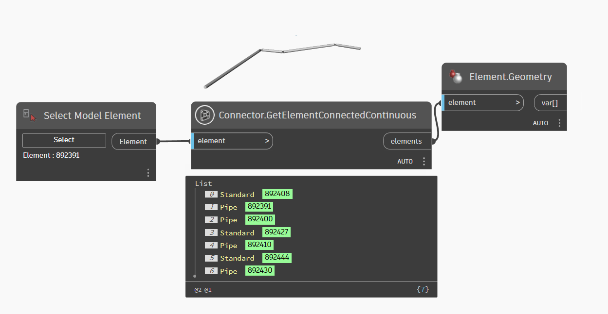
GetElementConnectedContinuous(Element?)
Return All Element Connected Continuous In Branch Be careful, because this node require recursive to check all connected.
public static List<Element> GetElementConnectedContinuous(Element? element)Parameters
elementElementelement
Returns
- List<Element>
list element connected Continuous from element
Examples
GetElementConnectedWith(Connector?)
return element connected with connector
public static Element? GetElementConnectedWith(Connector? connector)Parameters
connectorConnectorconnector
Returns
- Element
element has connected with connector
Examples
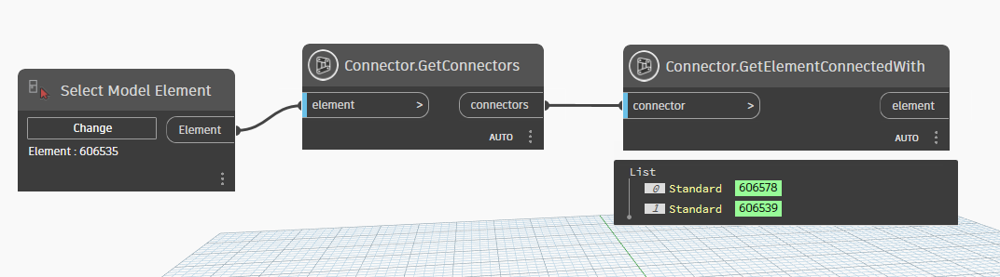
GetMEPConnectorInfo(Connector)
Gets MEP connector information.
public static MEPConnectorInfo GetMEPConnectorInfo(Connector connector)Parameters
connectorConnectorConnector
Returns
- MEPConnectorInfo
Returns null if there is no MEP connector information associated
Examples
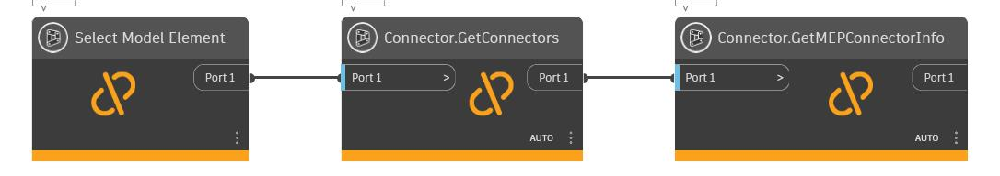
GetRemainingConnector(Element?, Connector)
return all connectors of element except connector same id with connector input
public static List<Connector> GetRemainingConnector(Element? element, Connector connector)Parameters
elementElementthe element
connectorConnectorconnector
Returns
- List<Connector>
list of connectors
Examples
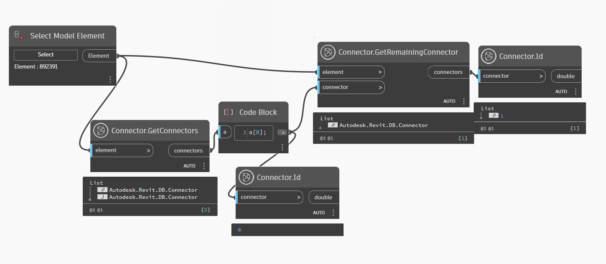
Connector.GetRemainingConnector.dynGetRemainingConnector(List<Connector>, Connector)
return all connectors of list connectors except connector same id with connector input
public static List<Connector> GetRemainingConnector(List<Connector> connectors, Connector connector)Parameters
connectorsList<Connector>list connectors need to check
connectorConnectorconnector need to remove
Returns
- List<Connector>
list of connectors
Examples
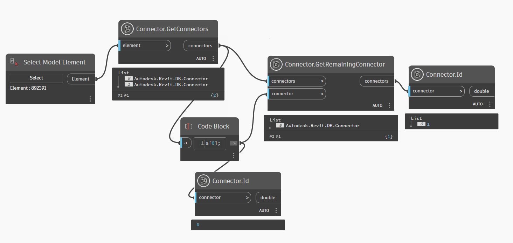
Connector.GetRemainingConnector2.dynGetUnusedConnectors(ConnectorManager?)
return list connector from element
public static List<Connector?> GetUnusedConnectors(ConnectorManager? connectorManager)Parameters
connectorManagerConnectorManagerconnector manager
Returns
- List<Connector>
connectors
GetUnusedConnectors(Element?)
return list connector unused from element
public static List<Connector?> GetUnusedConnectors(Element? element)Parameters
elementElementelement
Returns
- List<Connector>
unused connectors
Examples
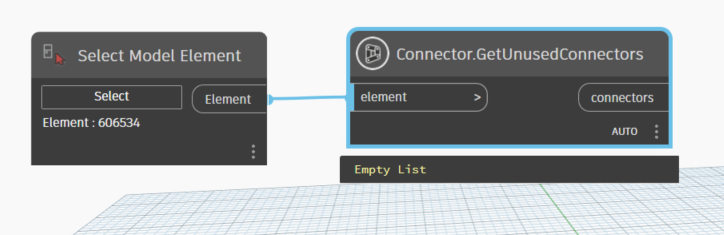
Connector.GetUnusedConnectors.dynGetUsedConnectors(Element?)
return list connector used from element
public static List<Connector> GetUsedConnectors(Element? element)Parameters
elementElementelement
Returns
- List<Connector>
used connectors
Examples
 Connector.GetUsedConnectors.dyn
Connector.GetUsedConnectors.dyn
Height(Connector)
The height of the connector.
public static double Height(Connector connector)Parameters
connectorConnectorConnector
Returns
- double
Height
Examples
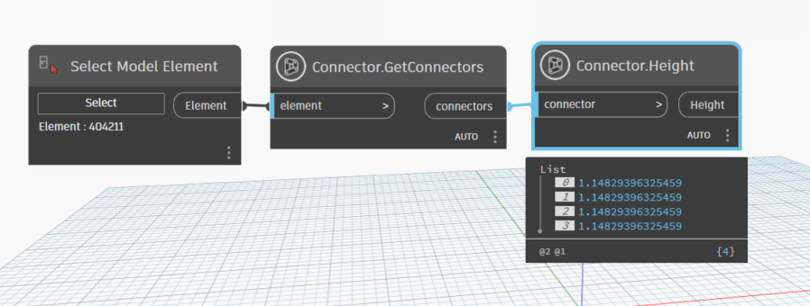
Id(Connector)
return id of connector
public static double Id(Connector connector)Parameters
connectorConnectorconnector
Returns
- double
Id of connector
Examples
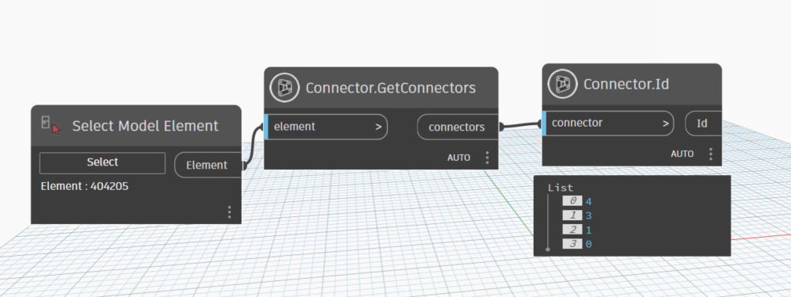
Connector.Id.dynIsConnected(Connector?)
check connector is connected or not
[NodeCategory("Query")]
public static bool? IsConnected(Connector? connector)Parameters
connectorConnectorthe connector
Returns
- bool?
true if connector is connected
Examples
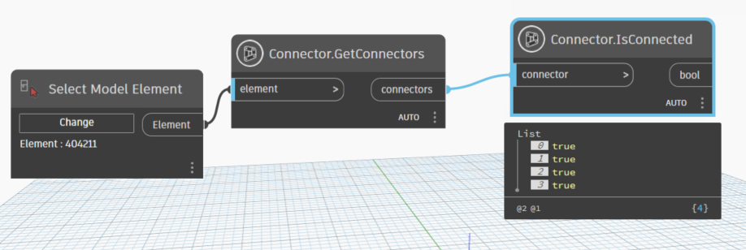
Connector.IsConnected.dynIsConnectedTo(Connector, Connector)
Identifies if the connector is connected to the specified connector.
[NodeCategory("Query")]
public static bool IsConnectedTo(Connector connector, Connector connectorOther)Parameters
connectorConnectorthe connector to check
connectorOtherConnectorthe second connector to identifies
Returns
- bool
true if connector is connected to other
Examples
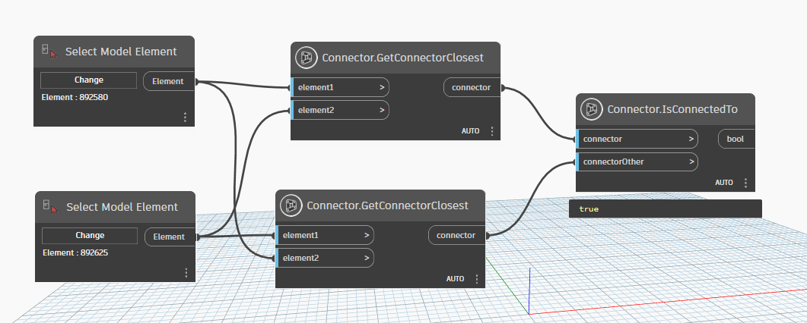
Origin(Connector?)
Get origin of connector
public static Point? Origin(Connector? connector)Parameters
connectorConnectorthe connector
Returns
- Point
location origin of connector
Examples
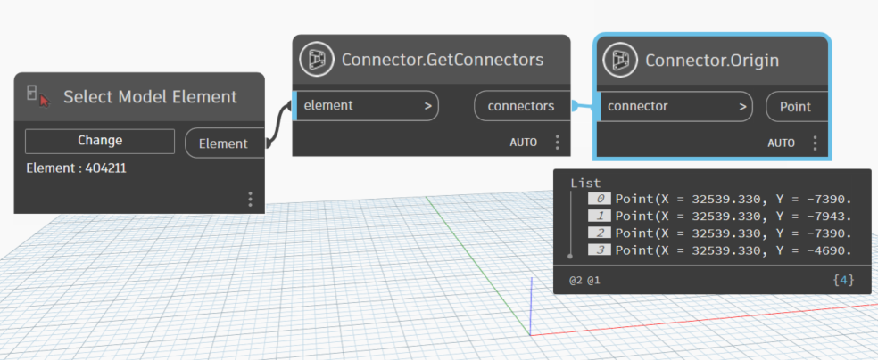
Connector.Origin.dynOwner(Connector)
The host of the connector. The element that contains connector. It may also contain other connectors.
public static Element Owner(Connector connector)Parameters
connectorConnectorconnector
Returns
- Element
element
Examples
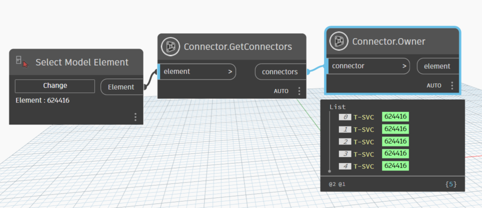
Connector.Owner.dynPressureDrop(Connector)
The pressure drop of the connector.
public static double PressureDrop(Connector connector)Parameters
connectorConnectorConnector
Returns
- double
PressureDrop
Examples
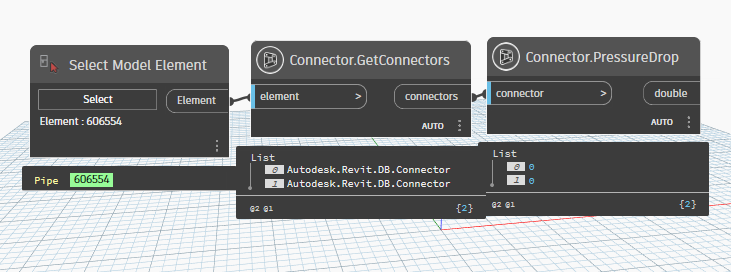
Connector.PressureDrop.dynRadius(Connector)
return the radius of connector
public static double Radius(Connector connector)Parameters
connectorConnectorconnector
Returns
- double
radius
Examples
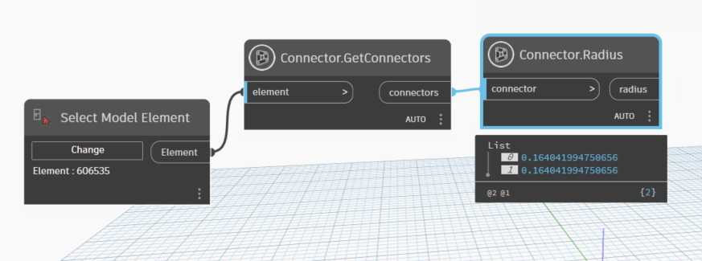
Connector.Radius.dynSetAngle(Connector, double)
set new angle for connector
public static void SetAngle(Connector connector, double angle)Parameters
connectorConnectorconnector
angledoubleangle
Examples
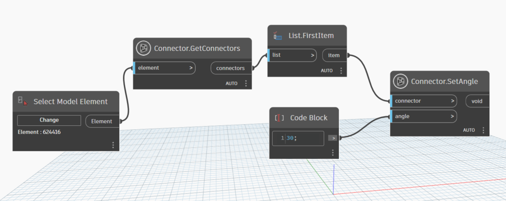
SetOrigin(Connector, Point)
set new origin for connector
public static void SetOrigin(Connector connector, Point origin)Parameters
connectorConnectorconnector
originPointnew point
Examples
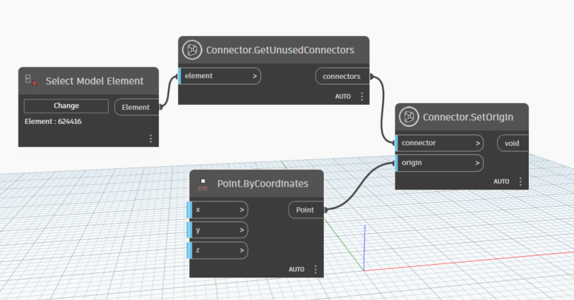
Shape(Connector)
The shape of the connector.
public static dynamic Shape(Connector connector)Parameters
connectorConnectorConnector
Returns
- dynamic
ConnectorProfileType
Examples
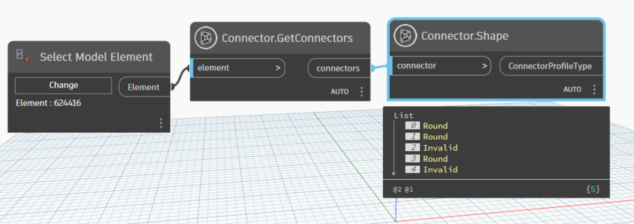
SystemType(Connector)
return system type of connector
public static dynamic? SystemType(Connector connector)Parameters
connectorConnectorconnector
Returns
- dynamic
domain
Examples
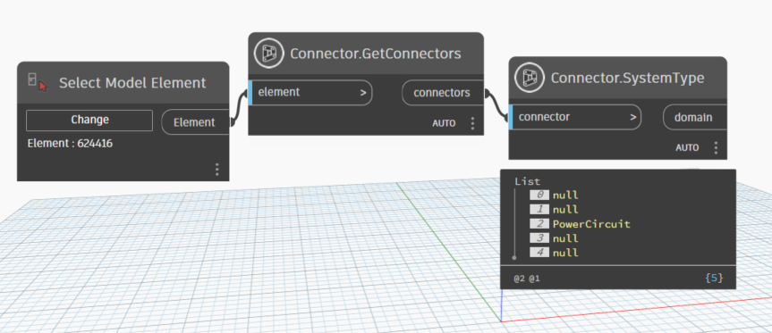
Connector.SystemType.dynVelocityPressure(Connector)
The velocity pressure of the connector.
public static double VelocityPressure(Connector connector)Parameters
connectorConnectorConnector
Returns
- double
VelocityPressure
Examples
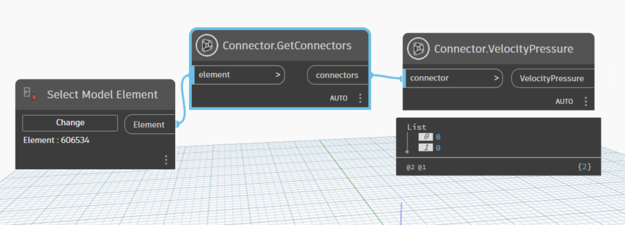
Width(Connector)
The Width of the connector.
public static double Width(Connector connector)Parameters
connectorConnectorConnector
Returns
- double
the width of connector
Examples
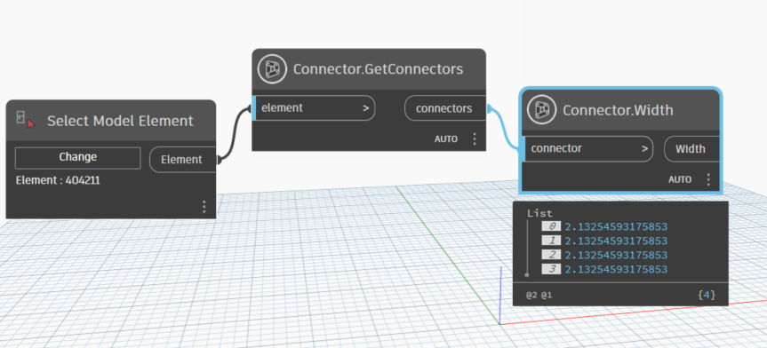
Connector.Width.dyn